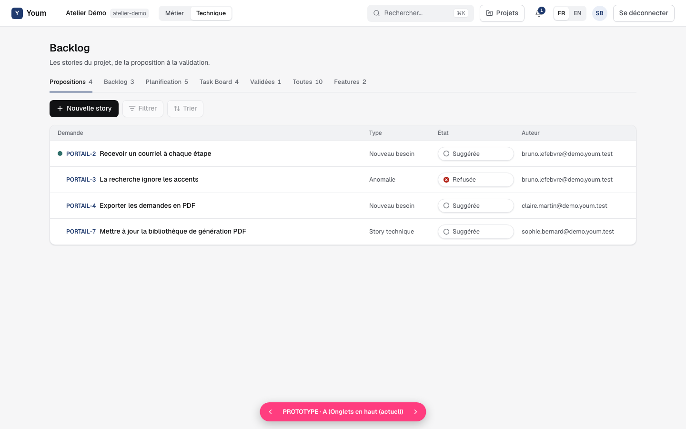
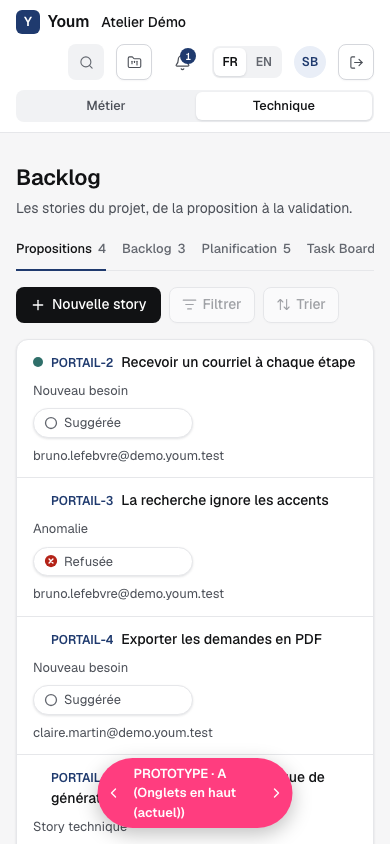
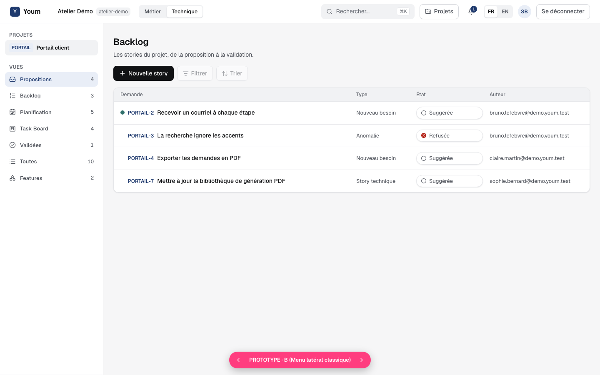
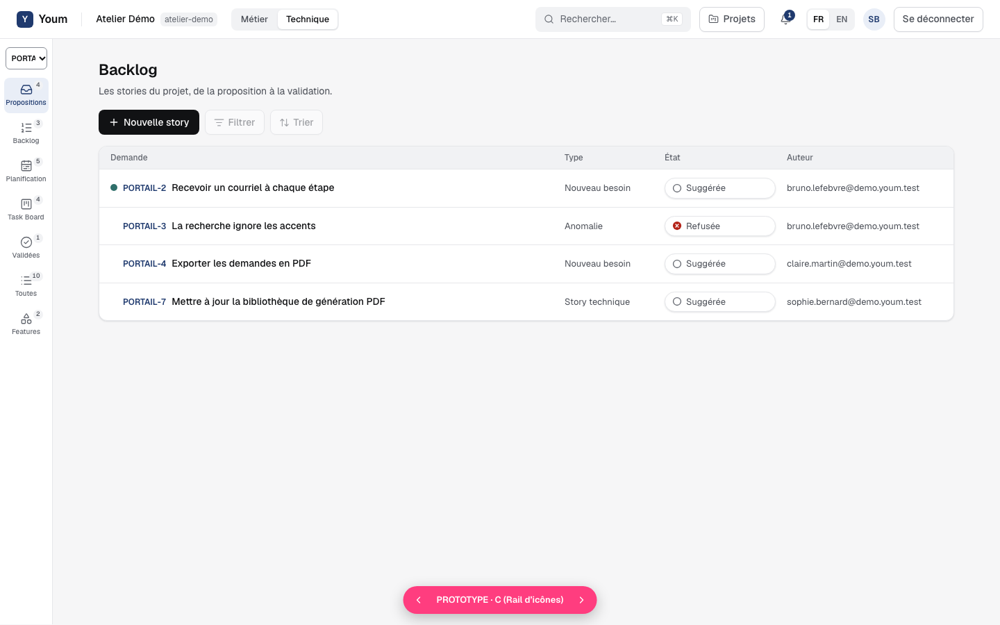
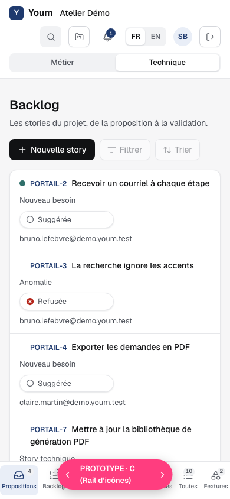
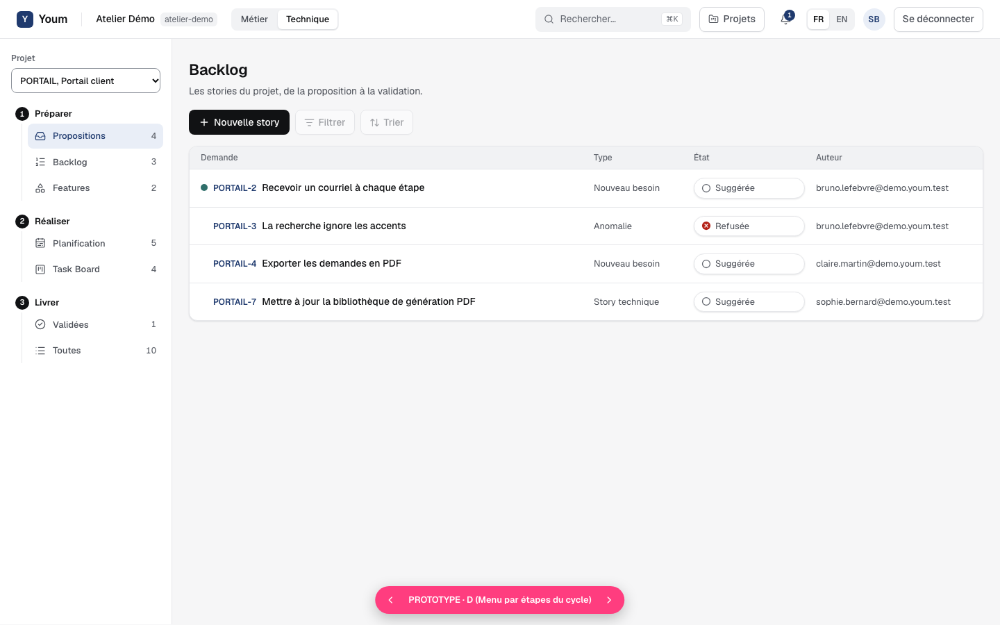
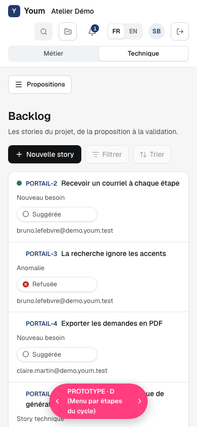

Prototype : menu latéral de la vue technique
Données de démonstration fictives. Chaque variante est montrée sur ordinateur, puis sur téléphone. La vue métier ne change dans aucune variante.
A. Onglets en haut (écran actuel)
Les sept vues en onglets sous le titre ; sur téléphone, les onglets défilent.


B. Menu latéral classique
Les projets en haut, puis les vues avec icône et compteur. Sur téléphone, un bouton « Menu » ouvre un tiroir.

C. Rail d’icônes
Une colonne étroite d’icônes ; sur téléphone, une barre de navigation en bas de l’écran.


D. Menu par étapes du cycle
Les vues rangées en trois étapes : Préparer, Réaliser, Livrer. Sur téléphone, comme B, dans un tiroir.

